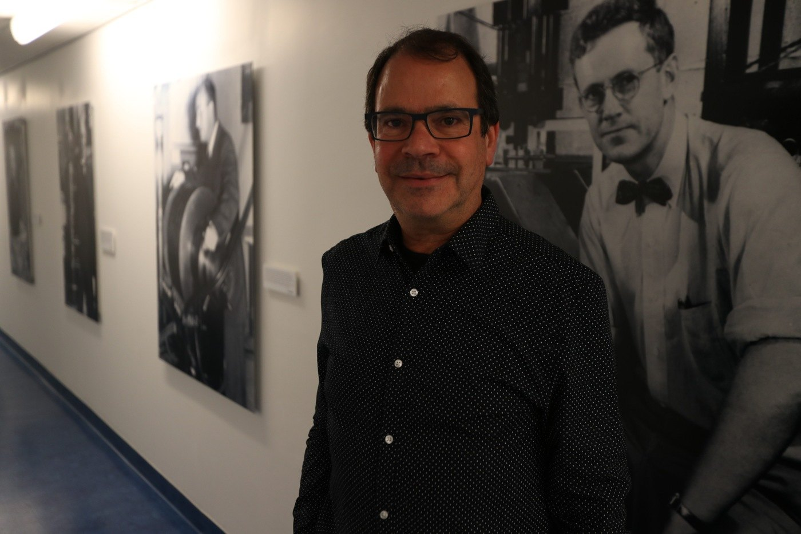

Edited interview
Itamar Ronen
Bringing the pieces of a scientific life together
Leiden University Medical Center
Interview: 7 May 2019 · 4 minute read

What is your focus at Leiden University Medical Center?
I work in radiology and at the C. J. Gorter Center for High Field MRI. We develop methods for magnetic resonance imaging and spectroscopy, particularly at high magnetic field strengths, and explore their use in studying disease.
One interest is using diffusion—the microscopic movement of molecules—to learn about tissue structure. That connects physical measurements to questions about what is happening within tissue.
How did your career lead to that combination?
I began in chemistry and specialized in physical chemistry. During my PhD, I encountered nuclear magnetic resonance, which also underlies MRI. A collaboration with the University of Minnesota gave me an opportunity to do imaging experiments, and that is where the imaging interest took hold.
My postdoctoral work moved further into imaging and tissue microstructure. Later, at Boston University, I helped establish an imaging center connected to the medical school and began working more closely with patient populations.
Coming to Leiden brought those strands together: spectroscopy from my PhD, high-field imaging from Minnesota, and clinical questions from Boston. It felt like a place where the different things I had learned could meet.
What changed when you started working with patients?
The complexity became much more apparent. In a controlled experiment, you can often define a system quite carefully. With patients, people have different histories, symptoms, and durations of disease. All of that matters to the measurements.
It changed my attitude toward science. Developing a method is one challenge; understanding what it means in a varied clinical population is another.
I would not claim that every project immediately changes treatment. But contributing something that may eventually improve people’s lives is a powerful source of satisfaction.
What first sparked your interest in science?
A chemistry set I received in elementary school. It captured my imagination in a way that stayed with me. I took additional science courses as a child, and by secondary school I was strongly drawn toward a scientific career.
For a time, I also considered becoming a classical pianist. Eventually, I decided not to pursue music professionally, but it remains part of my life. I still play piano and chamber music.
Choosing science did not require abandoning every other interest.
What have you gained from working in different countries?
Moving makes you reconsider things you may have treated as normal. You encounter different research practices, workplace expectations, and ways of living.
I encourage students to consider that experience when they have the opportunity. The scientific fit matters, but so does the personal one: you need a place where you can build relationships and feel part of a community.
An international move is more than a line on a CV. It can change how you see your work and your life.
What did hosting a Whitaker fellow mean for your group?
We connected with Carson Ingo through colleagues in the United States. His interests complemented work in our center, and a meeting helped us see how a collaboration could develop.
A visiting researcher can make a substantial contribution. Hosting is also an educational responsibility: helping someone establish an independent direction and develop their own ideas, rather than only asking them to advance an existing project.
There is a balance between independence and fitting into the group, and a funded visit has a limited timeframe. But those are worthwhile challenges if the experience helps a researcher build the next stage of a career.
What do you tell students who worry that everything has already been discovered?
That feeling is common. You enter a field full of accomplished people and wonder what you could possibly add. It can become particularly strong when you are expected to move from a supervised project toward your own ideas.
But science is still a work in progress. There are unanswered questions at every level, from fundamental theory to applications. If the work interests you, do not let the existence of experienced people convince you that there is no room to contribute.
How should someone think about a career beyond the PhD?
Ask where you would be happiest, and keep the range of possibilities open. Academic positions are limited, and academia is not the only place to use scientific training.
Industry, science writing, intellectual property, and funding organizations are among the possibilities. Loving science does not mean that you must run an academic laboratory. Understand what you want from your work and move toward that.
What do you value in a mentor or role model?
People who combine excellent science with being good human beings. I appreciate mentors who encourage young researchers and make it possible to ask a question without worrying that it will be treated as foolish.
That kind of atmosphere matters. Scientific ability and generosity toward people are qualities I value together.